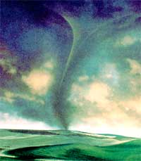
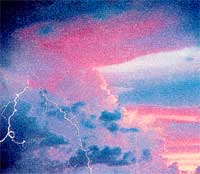
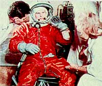

Season
Chasing tornadoes, lightning bugs, and other summer wonders.
Many people think of spring as the season for tornadoes, and generally they are right. The strongest tornadoes usually reach their peak of occurrence in May. About the third week of May, Oklahoma and the Texas Panhandle is, on an average, the place and time where the world's most violent weather phenomenon is at its fiercest and most common. Back in February, we saw - tragically - that Florida and the Gulf Coast have an early tornado season, though usually not as early as in this year of a strong El Niño. Likewise, June and July bring the threat of tornadoes farther north - to eastern Colorado, for instance, where smaller tornadoes are numerous in early June, and even to the Northeast U.S., where a second peak of frequency for the year comes in July and early August.
Most of us have heard that tornadoes in the Northeast are usually far less powerful than their cousins in the Plains. But what's interesting is that scientists and storm-chasers have learned so much about severe weather in the past few decades that they can now give separate terms to a number of different varieties of atmospheric vortex, including some of the weaker tornadoes. This isn't just a matter of classifying tornadoes from FO (weakest) to F5 (strongest) on the famous Fujita scale, which relies on the type of damage caused. Different tornadoes and other whirlwinds have different means of formation.
Two kinds of vortex which are visibly different than tornadoes have been known and named for a long time: waterspouts and dust devils. You might think that a waterspout is just a tornado over water. Actually, the true waterspout forms over the water and is typically much weaker than a tornado. In cases where the vortex forms from a severe thunderstorm over land and moves onward to pass over water, it can have a ferocity far exceeding the true waterspout. As for dust devils, these whirls occasionally can be big and strong enough to be dangerous, but their genesis is from localized heating. Their source of energy is limited. The source of most strong tornadoes is the energy of a major weather system concentrated by a super-cell thunders, form and a special rotating region of these storms called a mesocyclone. The mesocyclone. might be typically five miles in diameter and produce a tornado up to a mile wide.
Lightning kills more people in the U.S. each year than tornadoes do. Many of the deaths and injuries could have been avoided if people followed certain basic safety tips. I've discussed some of these here before, but it's well to repeat them.
When is lightning too close for you to be outside? You can estimate the distance of lightning by noting the number of seconds between the lightning and its thunder and dividing this by five to get the distance in miles. Certainly lightning three miles away is getting too close for safety. In fact, you should really play it much safer, because there i no guarantee that the next bolt will not come from another part of the cloud and be tight on you. If far from shelter initially, remember that thunderstorms can occasionally advance at speeds of 50 mph or faster.
The worst situation of all is to be the highest object in an area. A boat or swimmer on the water or a person standing in a large field or out on the open plains is in grave danger of being struck by lightning. If you can't escape and find yourself in this situation, get down as low as possible-even if you feel your lair stand on end, you may avert the strike if you throw yourself down. Water is worst of all because it can conduct electricity so well.
Most people realize that they are relatively safe from lightning in a motor vehicle, with its goal grounding and rubber tires. On the other hand, most don't realize how hazardous-potentially deadly-it is to be on the phone with an electrical storm nearby.
Waterspouts and dust devils look very different and occur in very different environments than tornadoes. But some of the new subclasses of tornado would not immediately he differentiated by the layperson, Some of these terns for them are slang of storm chasers, but they make gold sense. A landspout is a small weak tornado which typically doesn't arise from a mesocyclone or a supercell but instead from less severe thunderstorms and other convective clouds. Most of the many tornadoes of eastern Colorado in June are landspouts. A gustnado is a weak tornado which is formed from the gust front, the line of winds which races out ahead of a thunderstorm.
A LM A NAC June-July 1998
2 Coronation Day (in U.K.). 3 First American spacewalk, by Edward White on Gemini 4 in 1965.
6 World Environment Day.
7 Trinity Sunday.
10 FULL MOON, 12:18 A.M. EDT; Mercury at superior corn junction with Sun and unviewable (see later this month); date on which Ben Franklin is reputed to have performed his kite in a lightning storm experiment
11 Corpus Christi; King Kamehameha I Day (Hawaii).
14 Earliest sunrise (5:30 A.M. daylight saving time) for 40' North latitude.
16 First woman-Valentina Tereshkova-launched into space on Vostok 6 in 1963.
17 Bunker Hill Day (Boston and Suffolk Co., Mass.); Moon to lower right of Jupiter before dawn.
18 First U.S. woman launched into space-Sally Ride-on Challenger this day 15 years ago.
19 Moon to right of Saturn before dawn.
20 West Virginia Day.
21 Father's Day; Summer solstice, 10:03 A.M. EDT-summer begins in Northern Hemisphere of Earth.
22 Pluto's moon Charon (pronounced KAIR-on) discovered this day 20 years ago by U.S. Naval Observatory astronomer James Christy.
24 Midsummer's Day; St. John's (the Baptist's) Day.
25 Mercury visible low in west-northwest about 45 minutes after sunset, about one width of your fist held out at arm's length to the left of a very thin crescent Moon.
27 Latest sunset (8:33 P.M. daylight saving time) for 40° North latitude.
28 Mercury makes line with stars Pollux and Castor (to right of Mercury), low in west-northwest about 45 minutes after sunset.
30 Ninetieth anniversary of the Tunguska Event, mysterious explosion over Siberia.
JULY
1 FIRST QUARTER MOON, 2:43 P.m. EDT (rust instance of this phase this month); Canada Day.
2 Midpoint of the year at 1 P.m. local time if you are on daylight saving time (noon, If you are on standard time).
4 independence Day-this year, 222nd anniversary of signing of the Declaration of Independence; this day in 1956, Unionville, Maryland received 1.23 inches of rain-in 1 minutes!
5 Brilliant Venus to left of V-shaped Hyades star cluster (face of Taurus the Bull) before dawn.
6 A foot and a half of snow fell on the summit of Pikes Peak on July 6-7 in 1883.
8 Mercury at highest in west-northwest during dusk (look for it about 45 minutes after sunset) for anywhere near 40° North latitude; Venus extremely near a star in Taurus before dawn (telescope needed).
9 FULL MOON, 12:01 P.M. EDT.
10 Temperature hit 134°F, an all-time record for the Western Hemisphere, in Death Valley, California this day in 1913; Martinsburg, West Virginia had high of 112°F (tied for highest ever in U.S. east of Appalachians) on this day in 1936.
11 Pieces of the Skylab space station survived re-entry to crash in the Indian Ocean and Australia in 1979.
12 On this one day in 1940, lightning started 538 fires in the northern Rockies.
13 Barrow, Alaska - the northernmost town in the U.S. - hit an all-time record high of 79°F in 1993.
14 Spring comes to life in the Northern Hemisphere - of Mars!
15 Moon lower left of Jupiter before dawn; Venus near the star Zeta Tauri (use binoculars) before dawn.
16 LAST QUARTER MOON, 11:13 A.M. EDT; first atom bomb explosion took place this day in 1945.
17 Moon below Saturn before dawn; Mercury at greatest evening elongation from Sun (28°).
18 Jupiter reaches stationary point then begins retrograde motion (westward relative to background stars).
20 Sun enters the constellation Cancer, 6 P.M. EDT.
21 Moon well to right of bright Venus and dim Mars before dawn; Venus near star cluster M35 in Gemini (use binoculars or telescope).
23 NEW MOON, 9:44 A.M. EDT; Neptune at opposition - biggest and brightest of year, but you'll still need a telescope and finder chart.
24 Pioneer Day (Utah); in 1959, temperature hit a low of 89°F in Yuma, Arizona.
25 In 1956, the passenger liners Andrea Doria and Stockholm collided in fog off Nantucket; the former sank 12 hours later, killing 51.
28 Delta Aquarid meteor shower at its peak around now - look for these "shooting stars" from out of the south in the hours following midnight. Some will still be visible as late as two weeks from now.
29 Venus and Mars pull closer together in the dawn sky as the month ends.
31 The lunar rover carried Apollo 15°s Scott and Irwin completely around the lunar surface in 1971.
A cold-air funnel is another generally weak tornado or funnel cloud, which has yet another means of production - relatively cool, comparatively stable conditions. The only major vortices I've ever seen were a group of cold-air funnels in North Dakota. A meteorologist friend and I rode bicycles to within about a mile of the nearest of these funnels before it dissipated. We weren't taking much of a risk, though in rare cases such a vortex might generate winds in roughly the 70 to 100 mph range.
By the way, a funnel cloud is a condensation funnel which is not in contact with the ground. If its end ever touches the ground, it is then classified as a tornado. Not every tornado has a visible funnel, however. In some cases, an observer may see only a whirl of debris down on the surface, but the phenomenon can still be classified as a tornado. It can still be pan of a violent storm, however, and nay or tray not he something fun to chase after on your bicycle.
The sky can bring many other wondrous of summer's arrival. One of the most welcome a that first early June night when the fireflies begin their flashing.
There are other luminescent creatures in the world, but none quite like these. There are about 50 species in the U.S. and many more in the tropics. All share the property of having a marvelous final segment or two of their soft bodies which is capable of lighting up with a pale radiance.
What is the secret of this cool green illumination? How do fireflies produce light without heat? Scientists have identified the chemicals luciferin, luciferase, and adenosine triphosphate at work, and there apparently has been progress in understanding the cold fire in recent years. But much of the mystery remains. We see it on the wing, the living lights of the fireflies putting out their marvelous messages in light to attract mates.
Glowworms are the wingless females of some firefly species. They signal to the airborne males above from among the stems of grass. Fireflies are not flies, but a kind of beetle.
The larvae live underground and in rotting wood or refuse. They eat tiny insects, as the adults probably do too - except for some kinds which may never eat at all once they become adults.
Early summer seems to be the optimum time for fireflies. In his book A Walk Through the Year , naturalist and entomologist Edwin Way Teale writes of a great display of fireflies observed by him and his wife in Connecticut on one June 21.
Teale goes on to say that fireflies seem most numerous in the air between about 10 P.m. and midnight, "on nights moist and warn." It seems many of us-Teale and I included - have looked up spellbound to see them intermingle with numerous stars in what were, therefore, rather non-humid nights. Is that point of light you see 60 feet or 60 light-years away? I'm pretty certain I've seen fireflies floating among the tops of 100-foot tall tees, but their distance can indeed be difficult to estimate.
I wonder if it was heat, humidity, or both which has set off displays of fast, seemingly wild and erratic flashing which I've seen in fireflies a few times when a thunderstorm was approaching. Could their strange behavior have been due to the charge in the air? From the ozone from lightning? But the storms had not arrived yet...
Or - is it possible? - were the little bugs reacting to the flashing from what their instincts mistook for a sky-wide firefly? Some people - my wife is one of them-grew up calling fireflies by one of their popular names: lightning bugs.
Surely everyone has caught a firefly in his or her hand and watched the pulsing glow shine out from within. We still often hear people encouraging kids to capture-and keep - as many of them as possible in jars. That may not be such a good idea. Of course, in some years and some places, the number of fireflies is stupendously large-in the year of Teale's memorable display he asked, "In this June night, who can guess how many billion fireflies are on wing above the dark fields of eastern Connecticut?"
But there are individual species of firefly whose numbers are small. In any case, we creed to teach respect for the living world to our children. If, as a child, you don't learn respect for the magic of fireflies, what in nature will you ever respect?
|
 PAUL AND LINDA MARIE AMBROSE/FPG |
 The first woman in space, Russina cosmonaut Valentina Tereshkova. |
 |